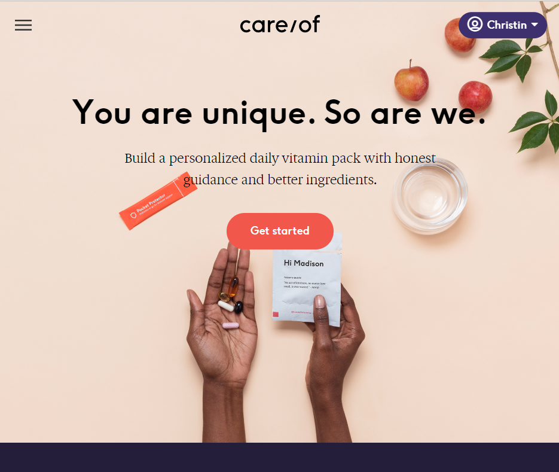
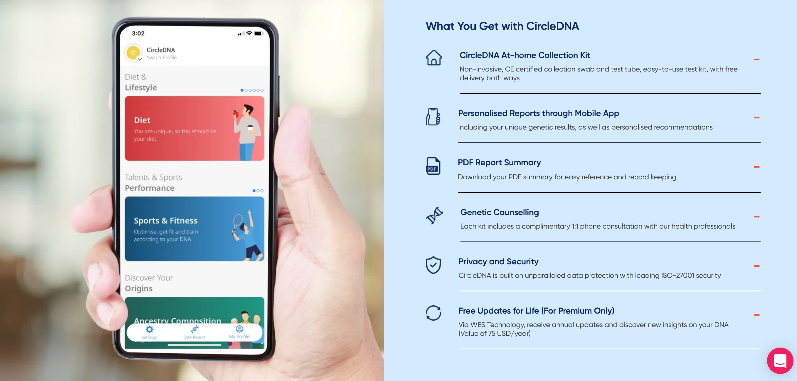

If you have ever used Facebook, shopped on Amazon, or watched shows on Netflix, you have experienced personalisation. According to Wikipedia’s definition, “Personalisation (broadly known as customisation) consists of tailoring a service or a product to accommodate specific individuals, sometimes tied to groups or segments of individuals”. Today, this customisation is integral in most of the products and services we use in our daily lives. Beyond its utility in targeted advertising, the concept of personalisation has grown to encompass much more — sometimes, the entire user experience. More than ever, we now see a rise in products and services that explicitly offer user customisation, and brands that are centred on personalisation itself.
What drives this paradigm-shift? In this article, I explore the value of personalisation, its relationship with the psychological phenomenon of decision fatigue, and then take a focused look at the healthcare industry — where personalisation has particularly resonated with consumers. Finally, I explore the challenges that companies might face in trying to innovate in personalisation technology, and the possible solutions we can employ.
The Value of Personalisation
According to a 2018 study done by McKinsey Global Institute, personalisation at scale could create a staggering $1.7 trillion to $3 trillion in new value, captured from revenue growth, consumer surplus, cost savings, and a variety of other avenues (9). McKinsey also made the claim that personalisation would become the “prime driver of marketing success” in the next five years (3). With advances in data analytics, artificial intelligence and machine learning will continue to foster and create more opportunities for better customisation.
You are probably already familiar with personalisation in marketing and advertising. The targeted email campaigns we receive in our inboxes and the sponsored advertisements we see on our social media pages are just two examples of personalisation at work. It is powerful, and has even been described as a “crucial weapon in a marketer’s arsenal” (9). There’s no doubt about the fact that personalisation methods add tremendous value to a company when employed in its marketing strategy: such methods have driven 5 to 15 percent revenue increases and 10 to 30 percent increases in marketing-speed efficiency (3).
But that is not all. This article is titled “The Future of Product: Personalisation”, because beyond technological advances and the cemented importance of personalisation methods in marketing, we are also beginning to see a shift in the market — more and more consumers are now seeking out customised products and experiences. In response, some companies are starting to set themselves apart from competitors by offering this “curated product experience that matches the unique needs of every customer”, which consequently also increases the value of their product and brand (3). In fact, a few of these companies base their entire unique selling proposition on their ability to provide individualised, tailored products and experiences.
Before taking a look at a few examples of these companies, let’s first understand one of the possible reasons why the attractiveness of personalised products is rising.
Decision Fatigue and Consumer Behaviour
Decision fatigue is a phenomenon related to studies on ego depletion and self-control, first conducted by social psychologist Roy F. Baumeister (14). Think about a time when you searched through pages upon pages of similar items on Amazon just to find that perfect one. If you got tired of looking for different alternatives of a product that you wanted, you experienced decision fatigue. Simply put, it refers to how the “mind becomes fatigued after a sustained period of decision making” (12). As a cognitively taxing process, decision fatigue was found to decrease rational decision-making and deplete willpower (12).
Once mentally depleted, a person is likely to become what’s known as a cognitive miser — someone who will hoard their energy by looking at just one dimension for a decision, such as price (12). From a consumer-economics lens, cognitive misers are then more susceptible to well-timed marketing tactics that then lead to irrational, impulse-buying behaviour. Another possible reaction on the other end of the spectrum is the complete avoidance of decision-making entirely: a consumer who sticks to the status quo in an effort to avoid emotional costs (1). All this, as you would expect, also make the customer experience less enjoyable.
How do consumer brands address decision fatigue, now that we are more aware of it? The answer: Personalisation.
On a smaller scale, some companies and brands have utilised personalisation technology in the deployment of product recommendations within singular channels — like the “Recommended for you” sections we see when we shop on sites like Lazada or Amazon. Fashion retailer and athletic wear brand, Bandier, had the opportunity to test the results of such personalisation, after recognising that consumers were typically not inclined to browse through “dozens of leggings or sneakers” (8).
After implementing the test personalisation, Bandier found that personalised displays indeed had a 9.7% higher conversion rate than variations that just showed overall best-sellers — and this increase occured over a duration of just 18 days. Furthermore, Bandier also saw a 2% overall increase in revenue during the testing period. Clearly, personalisation on this scale already has a significant mitigating effect on consumer decision fatigue.
On a broader scale, however, there still exists the larger burden of choosing between the vast multitude of brands offering similar products. Decision fatigue on this scale could mean a consumer who just does not know what is good anymore, something that is especially true in the healthcare industry. Consider the onslaught of skincare products, vitamin supplement brands, and more, vis-à-vis the particularity of healthcare — where we just want what’s best for us, our well-being, and something we can trust will meet our unique health needs.
Let’s take a look at how some companies have responded to address this consumer frustration.
Personalisation in the Healthcare Industry
Beyond passively tracking user behaviour with data analytics, AI and ML technology, companies can innovate and allow users to be part of the personalisation process too. The following companies we will see below have implemented novel, experiential ways of capturing the uniqueness of each customer. These new processes are embedded in the entire product experience itself, with tools such as online assessments, DNA sequencing and metabolism breathalysers. Let’s call these customisation processes experiential personalisation.
The experiential personalisation improves the overall customer experience, giving them a sense of agency and assurance that the product they receive at the end is truly the best fit for them.
Experiential personalisation (in the product experience), in essence, takes on the cognitively-taxing parts of the decision-making process whilst still ensuring the customer feels included.
- Lumen
Lumen uses a patented breathalyser that measures an individual’s metabolism via a single breath. Their scientifically-validated technology then translates the measurements into insights that a user can utilise to understand their well-being. But that’s not all — Lumen markets itself primarily as a personalised nutrition service. Their introduction video (linked above) ends with the statement, “That’s why Lumen is nutrition designed for you.”
Lumen highlights the fact that they recognise that every individual’s metabolism is different, and how personalised nutrition plans that take that individual difference into account are crucial to their efficacy. In a market now saturated with various nutrition apps such as MyFitnessPal and Lifesum, Lumen’s technology stands out with the assurance it provides to its customers that the nutrition plans from Lumen can accurately match their needs.
- Care/Of
 (Source: https://takecareof.com/)
Care/Of provides personalised daily vitamin supplement packs based on a customer’s health goals, lifestyle habits, and other health information. For the average consumer who might not even be aware of the range of vitamins available, much less the nutritional science behind them, Care/Of offers an easy way to find out what’s best for them. Through an online assessment, a customer can be assured that all their needs have been considered — Care/Of curates a daily vitamin supplement pack filled with 2 to 14 pills containing everything that they need. Compared to the tedious process of doing the research ourselves, and then finding various supplement products to purchase on our own, Care/Of is an option for those who are decision-fatigued.
On top of the personalisation service, Care/Of’s transparency and honesty with users about the research behind recommended supplements and their supply chains also further assure their customers and set them apart from traditional supplement brands, where such information is usually more opaque.
- CircleDNA
 (Source: https://circledna.com/en-sg/ )
CircleDNA takes personalisation to a higher level.
As its name suggests, the company uses a customer’s DNA to generate a host of personal health reports, from those detailing cancer risk to reports on diet and nutrition. CircleDNA posits that their customers will be able to optimise their health by understanding their unique genetic profile and being empowered to make informed and guided decisions on their diet and lifestyle.
The process is simple: a customer need only follow the instructions on an At-Home DNA testing kit — a non-invasive cheek swab — send it back to CircleDNA, where they’ll do the rest. Eating “according to your genes” and the promise that health advice and services can be precisely tailored based on an individual’s DNA certainly sets CircleDNA apart from the multitude of nutrition apps available today.
Personalisation Innovation: Challenges and Potential Solutions
The benefits of personalisation are manifold. However, innovating in personalisation brings with it real challenges that companies will have to face. Two main challenges lie in data and privacy.
The Challenge in Data
Currently, 78% of companies interviewed by Experian express a struggle with “data debt” — not having sufficient data about customers to implement personalisation tactics (4). Without data, personalisation is simply impossible.
One potential reason for the lack of data lies in the way in which it is stored: the data required are trapped in silos. A data silo, also known as an Information Silo, is defined as an “insular management system in which one information system or subsystem is incapable of reciprocal operation with others that are or should be, related” (6). When an organisation’s many departments do not communicate or use incompatible data systems, data silos are likely to form. This affects the effectiveness of decisioning logic used for personalisation, as trapped data cannot offer a complete picture of the business and its customers.
Preventive measures include creating standard operating procedures for data collection so that repeat entries are not recorded across multiple departments, and setting up the data architecture such that every data system is compatible in at least one layer. If data silos are already entrenched, McKinsey suggests integrating a centralised “customer-data platform and data-management platform, augmented with identity-resolution platforms to unify data” such that it is available across channels (9). Additionally, an integrated decisioning engine should be invested in for effective personalisation (9).
The Challenge of Privacy
Other than data systems, there is the challenge of ensuring the protection of customer privacy — and more importantly, respecting it.
While personalisation can be a helpful tool on both sides, consumer backlash over invasive use of their data has been observed in recent years. With documentaries like The Social Dilemma and the controversy over Cambridge Analytica, consumers today are understandably more alert. Highly specific ads that overtly and obviously identify a consumer, or that “follow users across websites” can be disturbing to a customer. Not to mention, some countries have increased regulations on consumer privacy too. Moving forward, companies need to walk the fine line between respecting user privacy and offering effective personalisation.
Harvard Business Review identifies three key components to walking this fine line:
Trust
Offering voluntary ad transparency — like the “Why am I seeing this ad?” feature on Facebook — reduces backlash, enhances consumer receptiveness, and even increases click-through rates by 11%.
Control
Customers may be willing to let companies use their information in a particular context, but not others. Letting customers clearly define these contexts themselves in privacy settings also buffer against potential backlash on unacceptable data collection.
Justification
Justifying the reason why a certain data point about a customer was used can reduce the customer’s discomfort or perceived invasion of privacy. For example, including a copy explaining why a customer’s physical location was utilised in a personalised advertisement — perhaps because the customer was only eligible for a service in a particular location they were in — can help improve the performance of the advertisement.
Conclusion
The value of personalisation and the consumer demand for it seems to be growing steadily, precipitating a new wave of product experiences centred on meeting the needs and wants of every unique individual. While challenges to personalisation remain, brands are continually innovating for this future of product. I’m personally excited to see what comes next, and how our lives as consumers can change with personalised services — we have definitely only just scratched the surface of what can be offered, and I am curious about the gaps in the market (where personalisation can be an attractive solution) that we have not found yet.
References
- Anderson, C., 2003. The psychology of doing nothing: Forms of decision avoidance result from reason and emotion. Psychological Bulletin, 129(1), pp.139-167.
- Baier, M., 2020. Personalized Customer Journeys and Technology Trends. [online] The Tilt. Available at: https://www.thetilt.com/content/technology-personalized-customer-journeys [Accessed 23 July 2021].
- Boudet, J., Gregg, B., Rathje, K., Stein, E. and Vollhardt, K., 2019. The future of personalization—and how to get ready for it. [online] Available at: https://www.mckinsey.com/business-functions/marketing-and-sales/our-insights/the-future-of-personalization-and-how-to-get-ready-for-it# [Accessed 23 July 2021].
- Bump, P., 2021. 24 Data-Backed Reasons to Personalize Your Marketing. [online] Blog.hubspot.com. Available at: https://blog.hubspot.com/marketing/data-personalize-marketing-li [Accessed 23 July 2021].
- Dodda, R., 2018. Personalisation Tech: The Key To The Future Of Marketing Automation. [online] Inc42. Available at: https://inc42.com/resources/personalisation-tech-the-key-to-the-future-of-marketing-automation/ [Accessed 23 July 2021].
- En.wikipedia.org. n.d. Information silo - Wikipedia. [online] Available at: https://en.wikipedia.org/wiki/Information_silo [Accessed 23 July 2021].
- En.wikipedia.org. n.d. Personalization - Wikipedia. [online] Available at: https://en.wikipedia.org/wiki/Personalization [Accessed 23 July 2021].
- Farooqi, A., 2021. Bandier Battles Decision Fatigue Online. [online] Gartner. Available at: https://www.gartner.com/en/marketing/insights/daily-insights/bandier-battles-decision-fatigue-online [Accessed 23 July 2021].
- Flavin, S. and Heller, J., 2019. A technology blueprint for personalization at scale. [online] Available at: https://www.mckinsey.com/business-functions/marketing-and-sales/our-insights/a-technology-blueprint-for-personalization-at-scale# [Accessed 23 July 2021].
- Gregg, B., Kalaoui, H., Maynes, J. and Schuler, G., 2016. Marketing’s Holy Grail: Digital personalization at scale. [online] Available at: https://www.mckinsey.com/business-functions/mckinsey-digital/our-insights/marketings-holy-grail-digital-personalization-at-scale [Accessed 23 July 2021].
- John, L., Kim, T. and Barasz, K., 2018. Targeting Ads Without Creeping Out Your Customers. [online] Harvard Business Review. Available at: https://hbr.org/2018/01/ads-that-dont-overstep?autocomplete=true [Accessed 23 July 2021].
- Optimizely. n.d. Decision Fatigue. [online] Available at: https://www.optimizely.com/optimization-glossary/decision-fatigue/ [Accessed 23 July 2021].
- Pignatiello, G., Martin, R. and Hickman, R., 2018. Decision fatigue: A conceptual analysis. Journal of Health Psychology, 25(1), pp.123-135.
- Tierney, J., 2011. Do You Suffer From Decision Fatigue?. New York Times, [online] Available at: https://www.nytimes.com/2011/08/21/magazine/do-you-suffer-from-decision-fatigue.html [Accessed 23 July 2021].
- Yieldify. 2021. Personalization Technology: Landscape & Trends for 2021 | Yieldify. [online] Available at: https://www.yieldify.com/free-guides/personalization-technology/ [Accessed 23 July 2021].